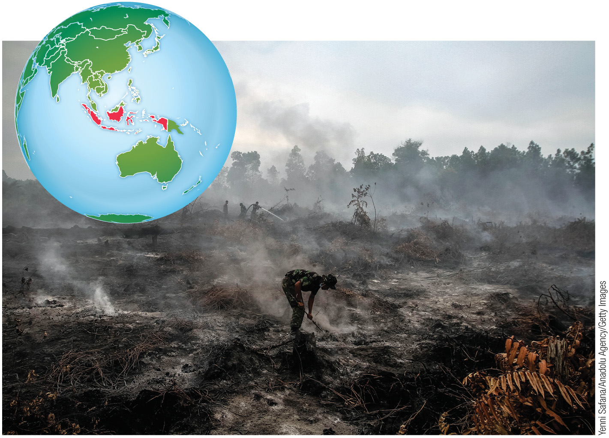
Matter and Energy
What we'll cover
Upcoming Assignments
Here's what's on deck. Check Canvas for full instructions and submission links.
A 5–7 Minute Sustainability Video
Across the semester you build one video about a contemporary problem that a sustainability approach can address. You choose a topic, join a group working on the same theme, and develop the project a piece at a time — each module adds one step, with discussion and peer feedback along the way.
- A challenge statement and thesis — the sustainability problem you chose, stated plainly, and your argument about it.
- Facts and figures from your literature review that establish why the problem needs a sustainability answer.
- A systems-thinking approach — a diagram, plus a summary of what it shows.
- The connection to ecosystem services and biogeochemical cycles.
- Strategies and solutions you would put forward.
- A separate reference page, submitted with the video.
Source: SOS 110, Final Project: Overview, Schedule, and Instructions (Canvas). Complete instructions live in each module.
Three Deliverables, Three Modules
The project is built in stages. Select an assignment below to see what it asks for.
| Module | Assignment | Task and focus | Deliverable |
|---|---|---|---|
| 3 | Complete the ASU Library tutorials and their quizzes. Start identifying a sustainability topic and three possible sources. | Screenshots of the quiz completion screens | |
| 5 | Choose your topic and build an outline of the argument and its supporting structure. | Topic paragraph (Word doc) and outline document | |
| 7 | Present the final video project and exchange feedback with your teammates. | Final video, slide file, and reference page |
Source: SOS 110, Final Project: Overview, Schedule, and Instructions and the module assignment pages (Canvas).
How the Video Is Scored
100 points across six criteria. Select any criterion to see all four rating levels and their point bands.
| Criterion | What earns full marks | Points |
|---|---|---|
| A clear, original thesis on a compelling sustainability issue, aligned with course concepts. | 15 | |
| A clear systems diagram with insightful analysis of socio-ecological-technological components, showing feedback loops. | 15 | |
| Clearly explains the relevant ecosystem characteristics, cycles, properties, and services. | 15 | |
| Strategies or solutions built on at least one concept from class, with a clear conclusion. | 20 | |
| Three or more peer-reviewed sources, synthesised rather than summarised. | 10 | |
| Engaging visuals, logical flow and transitions, strong narration — and your face on camera for at least two minutes. | 25 | |
| Total | 100 | |
Source: SOS 110, “Final Video Presentation” rubric (Canvas).
You can cool your kitchen by leaving the refrigerator door open.
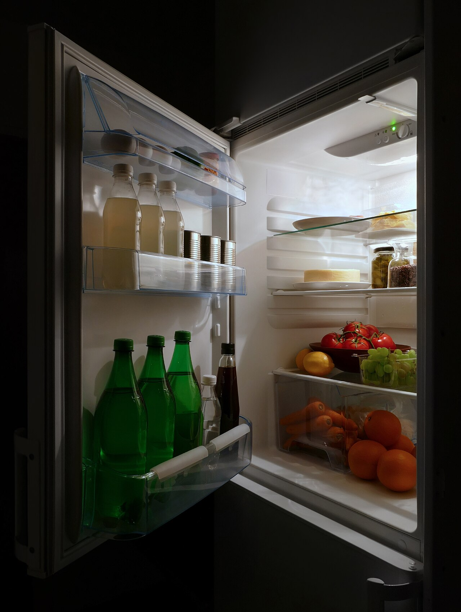
A 1-inch pellet of uranium releases the energy of approximately 17,000 ft³ of natural gas, 1 ton of coal, or 7,000 burritos.
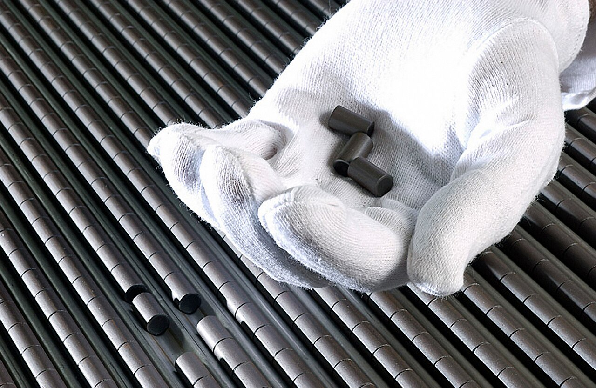
Incandescent light bulbs use only 20% of their energy for light.

Electricity can be created out of nothing.
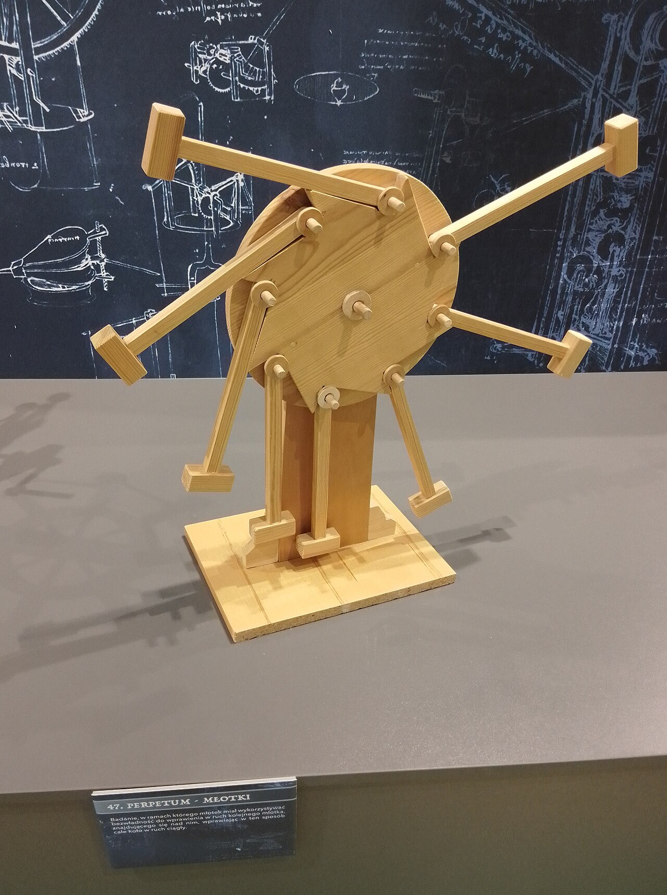
Matter, Elements, and Atoms
2,400 years ago, Democritus hypothesized that matter is made of tiny indivisible units he called atoms. Today we know this is essentially correct — though atoms do have internal structure.
- Matter: anything that takes up space and has mass — solids, liquids, or gases.
- Element: a substance that cannot be broken down into another substance (gold, calcium, oxygen).
- Atom: the smallest unit of an element that still has all that element's characteristics.
- The periodic table organizes all 118 known elements, but just ~50 account for nearly everything we interact with daily.
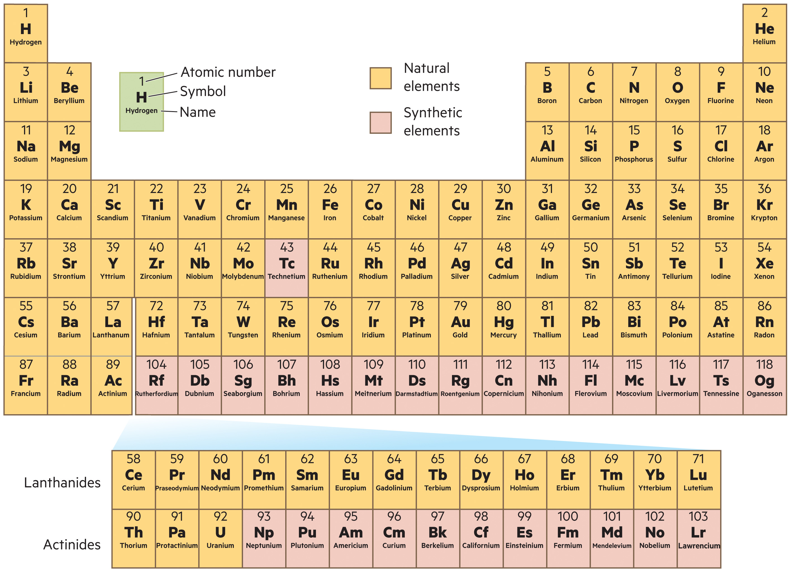
Protons, Neutrons, Electrons, and Isotopes
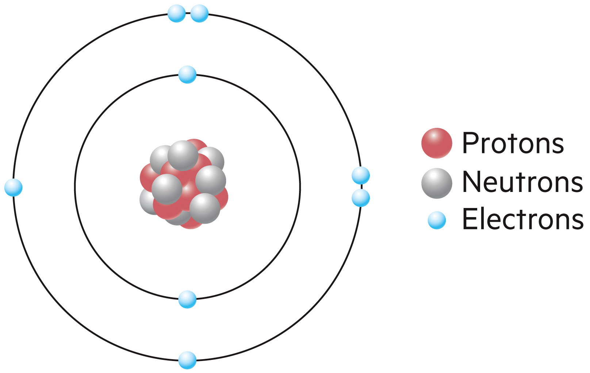
Build an atom — add particles and watch what it becomes
Simplified Bohr model (electrons really occupy probability “clouds,” not neat rings; electrons here track the protons, so the atom stays neutral). Adding protons + neutrons together builds heavier elements — the proton count sets the element; adding neutrons alone makes an isotope.
Matter Cannot Disappear — Only Transform
When wood burns, the mass of the CO₂, water vapor, and ash equals the mass of the original wood plus the oxygen consumed. Matter is conserved.
- The Law of Conservation of Mass: the mass of the parts in a chemical reaction is unchanged, even as atoms are rearranged.
- This is why pollution cannot be 'destroyed' — it can only be transformed or relocated.
- In environmental science, that means waste always goes somewhere.
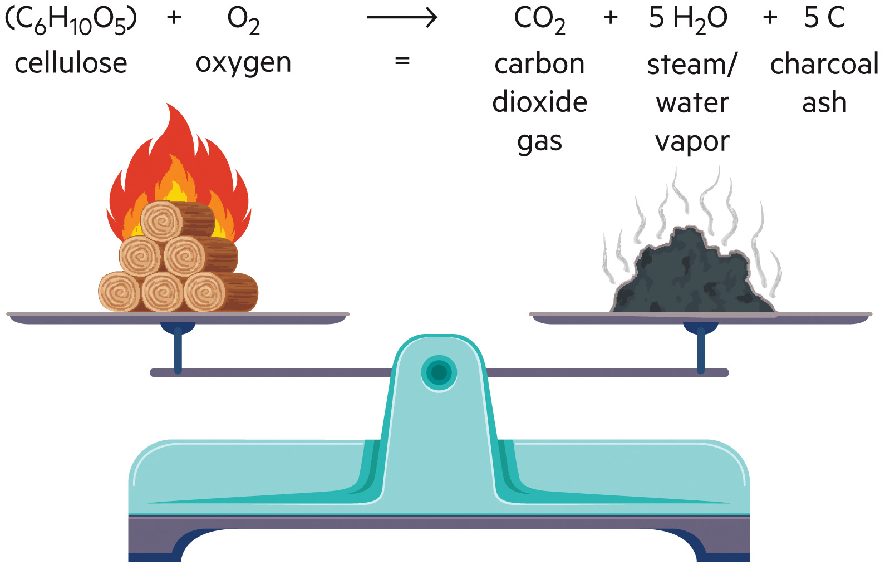
Properties of Matter Put to Work
Mike Biddle of MBA Polymers devised a process that uses the different physical properties of plastics to sort them out of trash — producing recycled plastic with 80–90% less energy than virgin production.
- Different plastics have different densities, melting points, and electromagnetic properties.
- Understanding matter at the molecular level enables innovation — applied chemistry in service of sustainability.
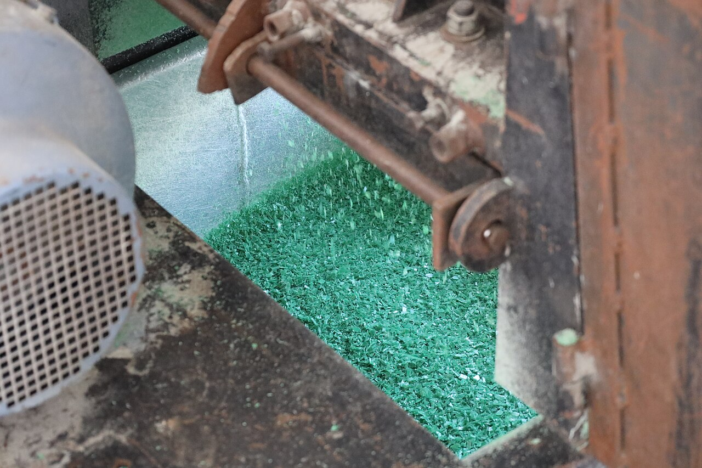
Forms and Transformations of Energy
Energy is the capacity to do work. Kinetic energy is the energy of motion; potential energy is stored, awaiting release.
Capturing the Sun's Energy
Sunlight travels as photons across ~93 million miles to reach Earth. Plants, algae, and some bacteria capture that photon energy to drive photosynthesis — converting CO₂ and water into glucose and oxygen.
- Photosynthesis is the link between radiant energy (sunlight) and chemical energy (food) — the base of virtually every food chain on Earth.
- Burning fossil fuels releases ancient solar energy stored by photosynthetic organisms millions of years ago.
- In 1772, Lavoisier showed matter is transformed but not lost when burned — founding the Law of Conservation of Mass.
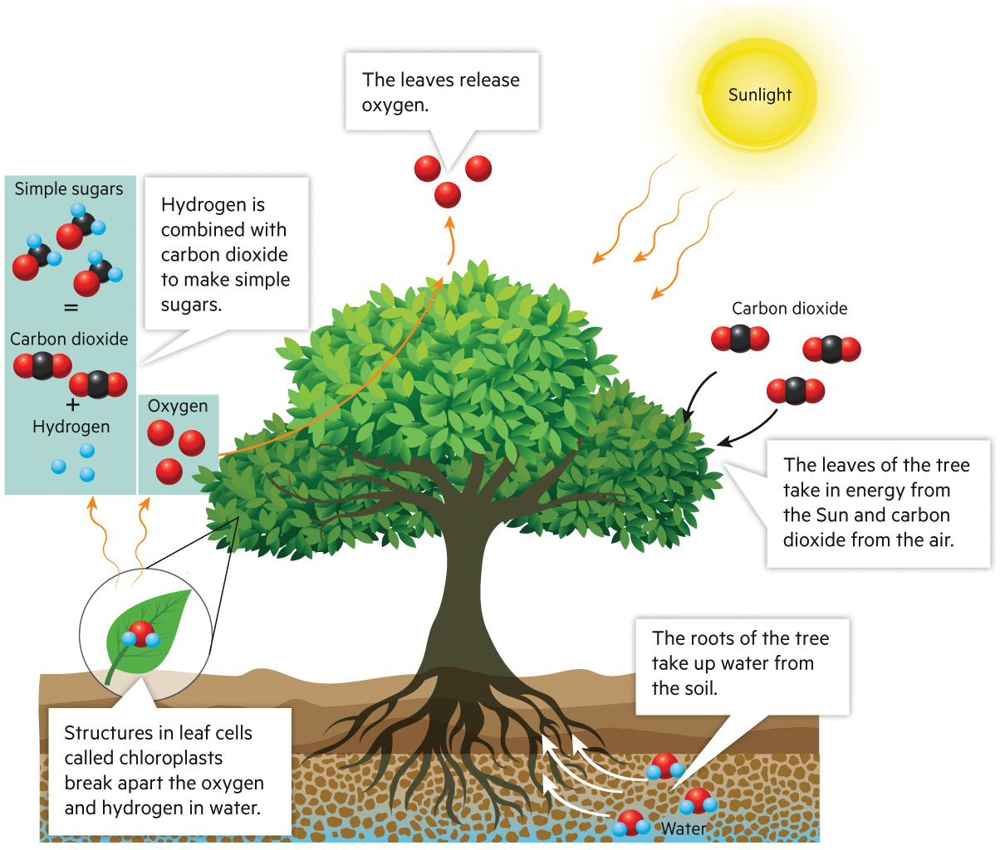
The Laws of Thermodynamics
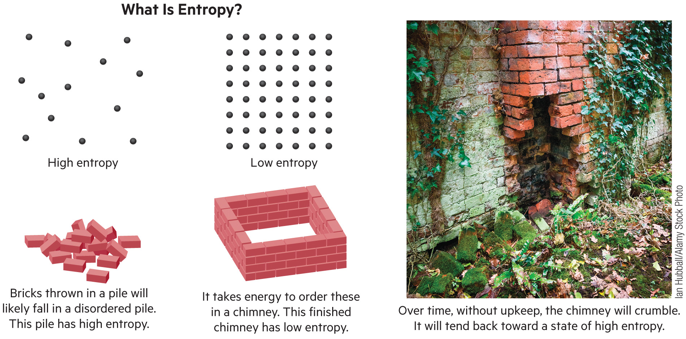
Vehicle Energy Flow — the First Law at Work
Why Energy Is Always Lost
A coal power plant converts only about 35% of fuel energy into electricity — the rest is lost as heat, the Second Law in action. An LED turns roughly 40% of its electricity into light; an incandescent bulb only about 10% — the other 90% is heat.
- Every energy conversion wastes some energy as heat — which is why improving efficiency is one of the most cost-effective environmental strategies.
- Higher efficiency = less fuel needed = lower emissions = lower costs.
- That 4× gain in light per watt is why an LED needs about 75% less electricity for the same brightness.
- The Second Law explains why perpetual-motion machines are impossible: every real system leaks energy as entropy increases.
Sources: U.S. EIA, Electric Power Annual (coal heat rate ≈10,300 Btu/kWh ≈33%; supercritical units up to ~40%); U.S. DOE Solid-State Lighting R&D (LED radiant efficiency ~40–50%); U.S. DOE Energy Saver (incandescent bulbs release ~90% of their energy as heat; LEDs use ~75% less energy).
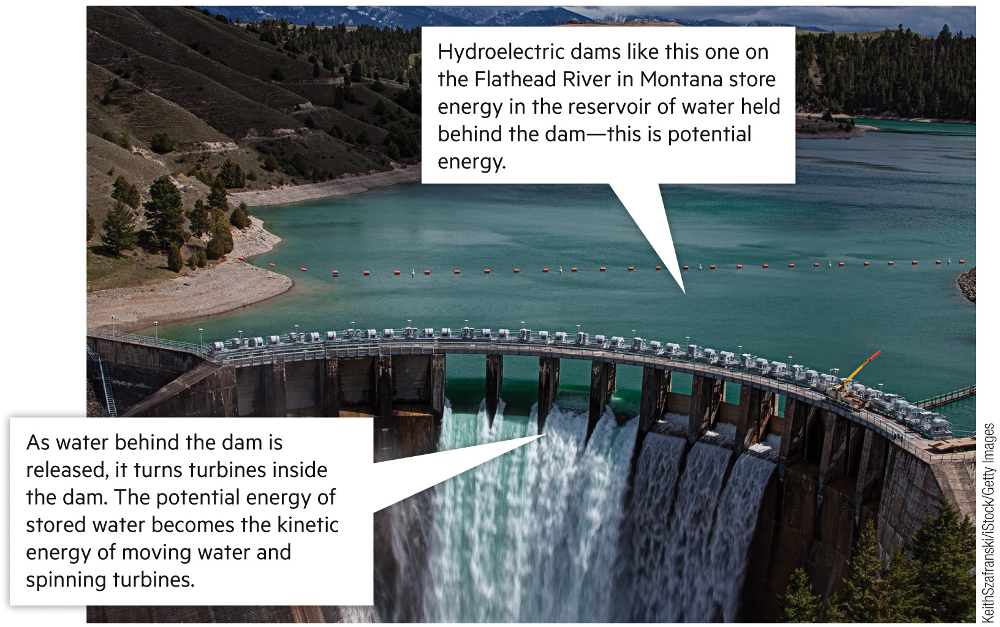
Where Energy Goes
Only a fraction of a fuel’s energy becomes electricity — the rest escapes as waste heat. Switch the source to compare. The Second Law, made visible.
Energy Flow Through Food Chains
Only ~10% of energy passes from one trophic level to the next — the rest is lost as heat (Second Law). This is why food chains are short, and why eating lower on the food chain is more efficient.
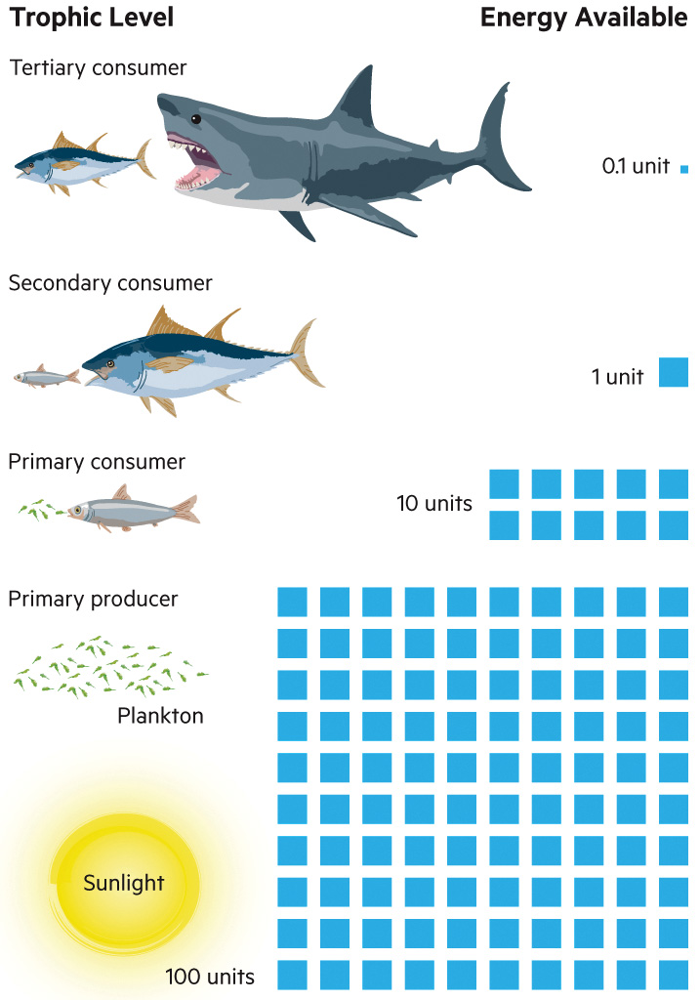
Only ~10% of energy transfers up at each step — try it
Each step up a food chain passes on only about 10% of the energy — the other ~90% is lost as heat (Second Law). That is why food chains are short, and why eating lower on the chain feeds far more people per acre. Change the producer number and every level rescales.
A Kilogram of Beef Really Does Hold More Calories
Calorie content: USDA FoodData Central (raw ground beef ≈250 kcal/100 g; raw potato ≈77 kcal/100 g). Feed-to-food conversion: Cassidy et al. (2013), Environmental Research Letters 8:034015 — beef returns about 3% of its feed calories as food and chicken about 13%; corroborated by Shepon et al. (2016), PNAS. Potatoes are the crop itself, so essentially 1 kcal in per 1 kcal out.
Understanding Matter and Energy in Your Choices
Conservation of mass and the laws of thermodynamics aren’t just textbook rules — they explain why waste never disappears and why efficiency is the cheapest form of clean energy. Here’s where to start.
- Know your energy: learn what powers your home and campus — nuclear, coal, solar? Your “energy mix” determines the emissions behind every kilowatt-hour.
- Reduce conversions: every energy conversion wastes heat (Second Law), so fewer steps means less waste — walk instead of drive, eat more plants.
- Think in matter cycles: waste always goes somewhere (conservation of mass) — reduce, reuse, and recycle with that in mind.
- Recycle the high-value stuff: recycling steel and tin cans saves 74% of the energy needed to make them new.
- Choose low-entropy producers: support companies that minimize waste and energy loss in how they make things.